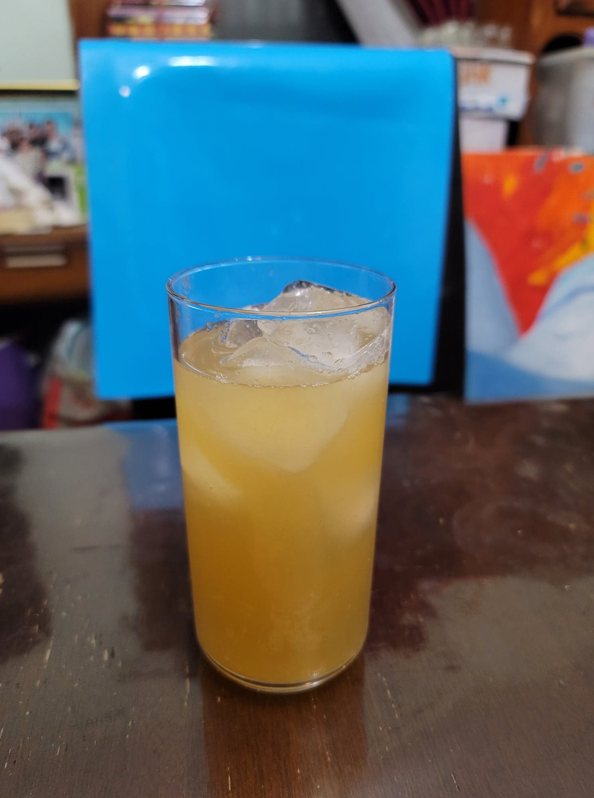

Spiced Pear Kombucha

Ingredients:
- 4 cups Kombucha, after 1st fermentation
- 1 Asian pear, peeled and cored
- 4 whole Cloves
- 1 stick Cinnamon, halved
- 1 tbsp Ginger, minced
Instructions:
- Add the pear and some kombucha to a blender and purée. Distribute the pear purée between 2 16 oz flip-top bottles. Then add 2 wholes cloves, 1/2 a cinnamon stick, and 1/2 tablespoon minced ginger to each bottle. Fill up the remaining space with the kombucha. Let ferment for 3-7 days, or until carbonated to preference. Then refrigerate and serve cold over ice.